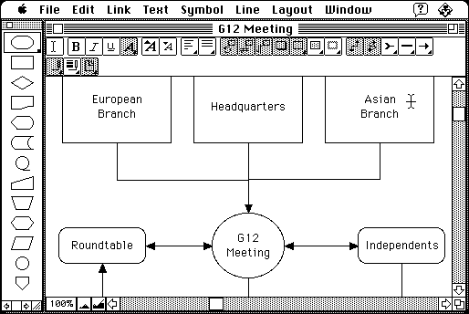

Download (external link)
MacFlow_50_Demo.bin (2.1M) MacFlow 5.0 Demo
copyright: Synergistic Applications and Mainstay
mod date: Jul 20, 1998
license: free demo for commercial product
from url :
Mainstay Products
For creating “flowcharts, organization charts, process flow diagrams, decision trees, work overviews, and more.” Requires “System 7 or later.” To run on a Macintosh Plus, the “Minimum size” setting of “Memory Requirements” must be reduced, such as to 2048k.

Here is the md5 checksum for the download, signed with Gryphel Key 5:
--------- GRY SIGNED TEXT --------- bdfbbfe22ff2c39a24f360755e4e608b MacFlow_50_Demo.bin ------- BEGIN GRY SIGNATURE ------- Gry/4Xa8CFcUzxdN/KnuTSeoZTcKVJOkQZ4U41/0RW5qa3b92tnuVBnoamutXpsZ mjrzWttskvPOx61Z1YFOHFB/D25KNVFfcjvrB5OPdirXJbHaqhItuAPRn6OwUFO2 eKRy14tF0GcqPz6aarOYsd/EOMvW669KEgHwH3oDBYuAR58ka3tPju/19amlIR67 -------- END GRY SIGNATURE --------